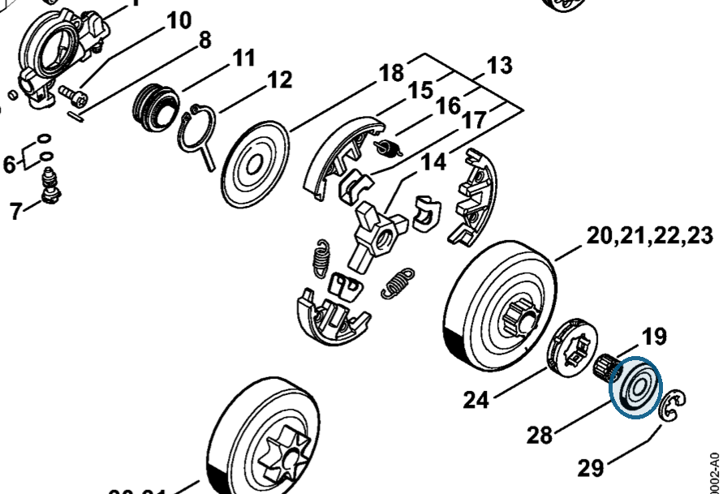

Washer Ø 27 mm
0000 958 1022
MS 261 — clutch drum
Retained by E-clip 9460 624 0801. Included in rim sprocket kit 1141 007 1002.
Item 28 Qty listed: 1

MS 261 C-M spare-parts list, 10/02/2023. Drawing p. 10; parts table p. 12.
0000 958 1022
Retained by E-clip 9460 624 0801. Included in rim sprocket kit 1141 007 1002.
Item 28 Qty listed: 1

MS 261 C-M spare-parts list, 10/02/2023. Drawing p. 10; parts table p. 12.